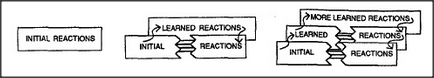
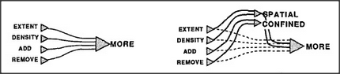
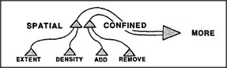
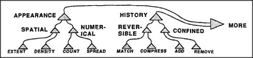

How could a brain continue functioning while changing and adding new agents and connections? One way would be to keep each old system unchanged while building a new version in the form of a detour around or across it — but not permitting the new version to assume control until we're sure that it can also perform the older system's vital functions. Then we can cut some of the older connections.
We could use this method to form our hierarchical Society-of-More:
Now let's draw this in another form, as though there were no room to fit new agents in between the older ones.
As we accumulate more low-level agents and additional intermediate layers to manage them, this grows into the very multilevel hierarchy we've seen before.
The nerve cells in an animal's brain can't always move aside to make more room for extra ones. So those new layers might indeed have to be located elsewhere, attached by bundles of connection wires. Indeed, no aspect of the brain's anatomy is more striking than its huge masses of connection bundles.